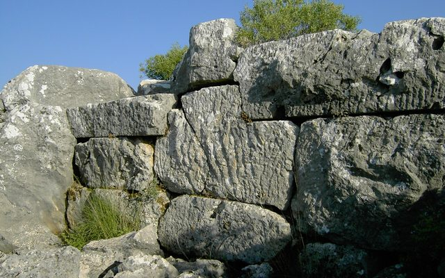

Startseite › Sehenswürdigkeiten nach Provinzen › Muğla
Der Kültür-Varlıkları-Führer verzeichnet 48 Orte in Muğla: 32 ausgrabungsstätte, 9 museum, 2 see, 2 wanderweg, 1 rafting, 1 burg & historisches bauwerk, 1 schlucht. Unten finden Sie die Höhepunkte, eine Karte und die vollständige Liste.
⭐ Höhepunkte

1 · Muğla · AusgrabungsstätteAusgrabungsstätte Muğla Knidos
Knidos an der Spitze der Halbinsel Datça, wo Ägäis und Mittelmeer zusammentreffen, war eine dorische Stadt mit zwei Häfen.

2 · Muğla · AusgrabungsstätteAmintas Kaya Mezarı
Das Felsgrab des Amyntas in den Klippen über Fethiye ist eines der eindrucksvollsten Felsgräber Lykiens.

3 · Muğla · AusgrabungsstätteAntike Stadt Amos
Amos bei Turunç (Marmaris) ist eine hellenistische karische Stadt auf einem Hügel über der Bucht Kumlubük.
🗺 Auf der Karte
📍 Alle Orte (48)
Ausgrabungsstätte (32)
Ausgrabungsstätte Muğla KnidosAusgrabungsstätteAmintas Kaya MezarıAusgrabungsstätteAntike Stadt AmosAusgrabungsstätte
Antike Stadt ArsadaAusgrabungsstätte Antike Stadt BargyliaAusgrabungsstätte
Antike Stadt BargyliaAusgrabungsstätte Antikes Theater BodrumAusgrabungsstätte
Antikes Theater BodrumAusgrabungsstätte Fethiye Gemile AdasıAusgrabungsstätte
Fethiye Gemile AdasıAusgrabungsstätte Ausgrabungsstätte Fethiye KayaköyAusgrabungsstätte
Ausgrabungsstätte Fethiye KayaköyAusgrabungsstätte Ausgrabungsstätte Fethiye LetoonAusgrabungsstätte
Ausgrabungsstätte Fethiye LetoonAusgrabungsstätte Ausgrabungsstätte Fethiye PınaraAusgrabungsstätte
Ausgrabungsstätte Fethiye PınaraAusgrabungsstätte Ausgrabungsstätte Fethiye TlosAusgrabungsstätte
Ausgrabungsstätte Fethiye TlosAusgrabungsstätte Gümüşkesen Anıt MezarıAusgrabungsstätte
Gümüşkesen Anıt MezarıAusgrabungsstätte Antike Stadt Herakleia (Latmos)Ausgrabungsstätte
Antike Stadt Herakleia (Latmos)Ausgrabungsstätte Ausgrabungsstätte IassosAusgrabungsstätte
Ausgrabungsstätte IassosAusgrabungsstätte Antike Stadt KadyandaAusgrabungsstätte
Antike Stadt KadyandaAusgrabungsstätte Ausgrabungsstätte KaunosAusgrabungsstätte
Ausgrabungsstätte KaunosAusgrabungsstätte Antike Stadt KeramosAusgrabungsstätte
Antike Stadt KeramosAusgrabungsstätte Ausgrabungsstätte LabraundaAusgrabungsstätte
Ausgrabungsstätte LabraundaAusgrabungsstätte Ausgrabungsstätte LaginaAusgrabungsstätte
Ausgrabungsstätte LaginaAusgrabungsstätte Antike Stadt LorymaAusgrabungsstätte
Antike Stadt LorymaAusgrabungsstätte Burg und Ausgrabungsstätte Beçin, MilasAusgrabungsstätte
Burg und Ausgrabungsstätte Beçin, MilasAusgrabungsstätte Ausgrabungsstätte Milas EuromosAusgrabungsstätte
Ausgrabungsstätte Milas EuromosAusgrabungsstätte Grabmonument und Museum Uzunyuva (Hekatomneion), MilasAusgrabungsstätte
Grabmonument und Museum Uzunyuva (Hekatomneion), MilasAusgrabungsstätte Antike Stadt MyndosAusgrabungsstätte
Antike Stadt MyndosAusgrabungsstätte Antike Stadt PedasaAusgrabungsstätte
Antike Stadt PedasaAusgrabungsstätte Burg PydnaiAusgrabungsstätte
Burg PydnaiAusgrabungsstätte Ausgrabungsstätte Sedir AdasıAusgrabungsstätte
Ausgrabungsstätte Sedir AdasıAusgrabungsstätte Antike Stadt SidymaAusgrabungsstätte
Antike Stadt SidymaAusgrabungsstätte Ausgrabungsstätte StratonikeiaAusgrabungsstätteAntike Stadt HyllarimaAusgrabungsstätteMilas Uzunyuva (Hekatomnos Anıt Mezarı)AusgrabungsstätteAntike Stadt OinoandaAusgrabungsstätte
Ausgrabungsstätte StratonikeiaAusgrabungsstätteAntike Stadt HyllarimaAusgrabungsstätteMilas Uzunyuva (Hekatomnos Anıt Mezarı)AusgrabungsstätteAntike Stadt OinoandaAusgrabungsstätteMuseum (9)
 Archäologisches Museum Bodrum SualtıMuseum
Archäologisches Museum Bodrum SualtıMuseum Museum FethiyeMuseum
Museum FethiyeMuseum Museum Milas İassos Balık PazarıMuseum
Museum Milas İassos Balık PazarıMuseum Denkmalmuseum Muğla Bodrum MausoleiumMuseum
Denkmalmuseum Muğla Bodrum MausoleiumMuseum Museum MuğlaMuseum
Museum MuğlaMuseum Museum Zeki Müren SanatMuseumBodrum Serçe Limanı Cam Batığı Sergi SalonuMuseumMuseum MarmarisMuseumMuseum Milas Taş EserlerMuseum
Museum Zeki Müren SanatMuseumBodrum Serçe Limanı Cam Batığı Sergi SalonuMuseumMuseum MarmarisMuseumMuseum Milas Taş EserlerMuseum